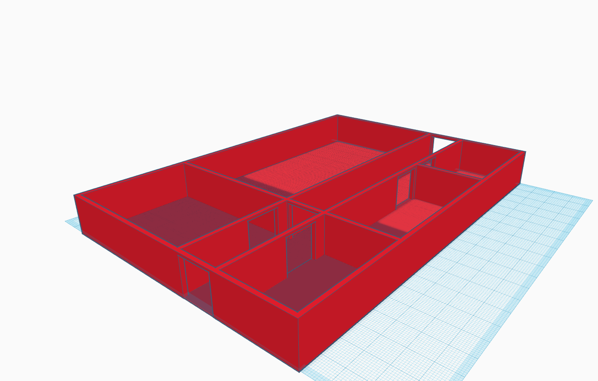
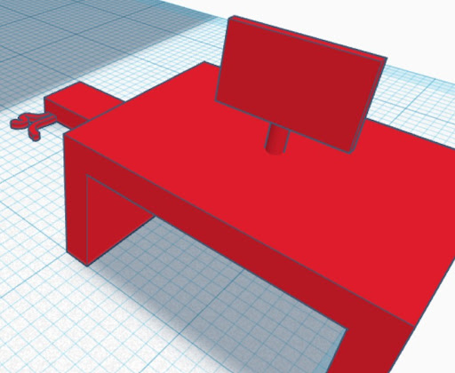

I used a program called Tinkercad to demonstrate 3D design. During the design process, I paid attention to the smallest details in order to achieve a perfect building on a large scale. Here you can see the basic concept, which can be zoomed out 1000 times  I also used Tinkercad to model the physical location of the devices. I designed the devices freehand.